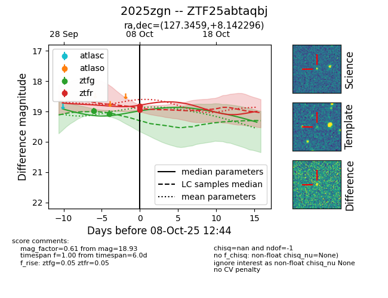
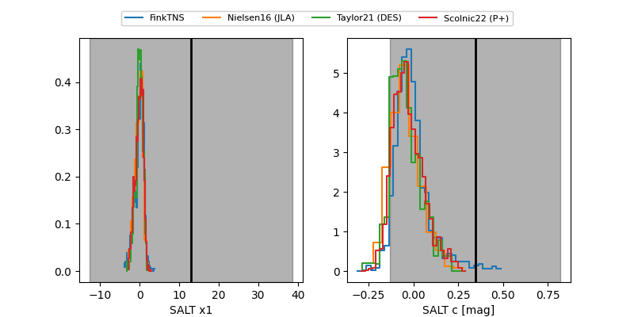

FINK: ZTF25abtaqbj
Lasair: ZTF25abtaqbj
ALeRCE: ZTF25abtaqbj
TNS: 2025zgn
YSE: 2025zgn
ZTF25abtaqbj (ztf,fink)
2025zgn (tns,yse)
equatorial (ra, dec) = (127.3459,+8.14230)
galactic (l, b) = (216.8081,+25.45130)


last ztfg=19.07, ztfr=18.93
2 ztfg, 2 ztfr detections